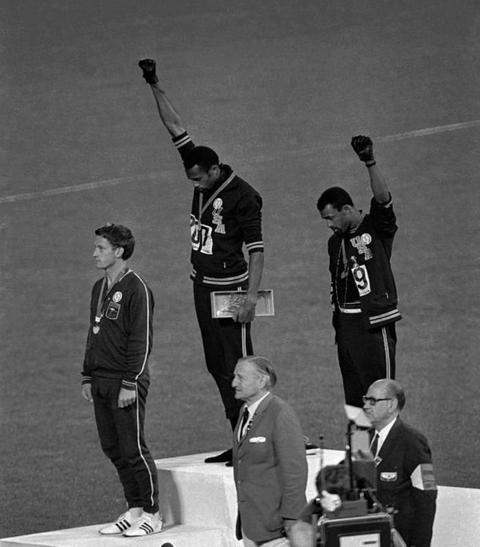

La brutalidad policial contra las comunidades afroamericanas es una incontable lista. El racismo ha sido siempre en EE.UU. una política de Estado. A fines de los 60 se crea el partido de las Panteras Negras creado para organizar y liberar a los guetos negros, pagó el precio mas alto. Sus militantes fueron asesinados o encarcelados y su lucha desacreditada.
“Pretendían ser una vanguardia revolucionaria, no buscaban solamente liberar a los negros”.
El Black Panther Party (Partido de los Panteras Negras, BPP en inglés), fue fundado en octubre de 1966 en Oakland, California por Huey P. Newton y Bobby Seale utilizaron una retórica marxista, e intentaron organizar los guetos. Su programa de diez puntos contenía una serie de reivindicaciones políticas y sociales y reclamaba el derecho a la autodefensa.
“Para nosotros, se trata de una lucha de clases entre la clase obrera proletaria, que reagrupa a las masas, y la minuscula minoria que es la clase dirigente. Los miembros de la clase obrera, sea cual sea su color, deben unirse contra la clase dirigente que los oprime y los explota. [...] Creemos que llevamos adelante una lucha de clase, no un combate racial”. (Back Phanters).
En el verano de 1967, el FBI empezó a alarmarse y redireccionó uno de sus programas de contraespionaje, el ColntelPro, hacia los movimientos nacionalistas negros. El 18 de septiembre de 1968, Edgar Hoover declaró que el BPP “constituye la principal amenaza que existe contra la seguridad interna del país”.
En las pantallas y radios del mundo
Las panteras negras se dieron a conocer aún más por aquella imagen de Toomie Smith y John Carlos en el podio de los juegos olímpicos del 68, con el famoso gesto del puño levantado cubierto de un guante negro mientras sonaba el himno norteamericano.
“La dignidad de los negros vale más que ganar una medalla de oro para estados unidos” (Toomie Smith)
La utilización de las técnicas de represión clásicas, el FBI, a través del ColntelPro, se le sumaría el asesinato. Luego de la ejecución hacía el líder de los Panteras de Chicago, algunos meses más tarde, Geronimo Pratt, uno de los miembros más destacados del BPP de Los Ángeles, fue detenido por el crimen de una mujer blanca cometido en uno de los suburbios de Los Ángeles mientras que, según múltiples testimonios -confirmados por los informes de los agentes infiltrados del FBI-, asistía a una reunión de su organización en Oakland. Al momento del juicio, esos elementos desaparecieron misteriosamente del expediente. Geronimo Pratt fue condenado a prisión perpetua [fue liberado en 1997 debido a la falsificación de evidencia por parte de la fiscalía. Falleció en Tanzania en 2011].
A fines de 1970, los militantes negros, divididos, cada vez menos apoyados por la izquierda liberal blanca (también sometida a los ataques del ColntelPro), terminan matándose entre ellos.
A fines de 1971, el BPP se encontraba diezmado por la represión, su popularidad disminuía inexorablemente y sus dirigentes replegaban su acción a su base de Oakland, al tiempo que decidían reincorporarse al juego político formal apoyando a candidatos demócratas en las elecciones locales. Los militantes radicales más experimentados estaban en el exilio o en prisión.
Una segunda ola represiva tuvo lugar a comienzos de la década de 1980 y apuntó anuevos activistas del movimiento negro, pero también a militantes independentistas portorriqueños y radicales blancos.
La ley RICO había sido elaborada para luchar contra el crimen organizado. Fue votada por el Congreso en 1970. Su objetivo era suministrar a los fiscales los medios para enjuiciar a los miembros de bandas criminales acusados de haber participado en dos actos condenables en un período de tiempo determinado. Y permitía condenarlos automáticamente a veinte años de prisión.
A los veinte años de la ley RICO se agregaron condenas aún superiores para aquellos que fueron declarados culpables de haber participado en la evasión, exitosa, de Assata Shakur en 1979. A modo de comparación, en 1986, un militante antiaborto acusado de haber perpetrado una decena de atentados con explosivos contra clínicas que practicaban la interrupción voluntaria del embarazo fue condenado a diez años de prisión y puesto en libertad condicional cuarenta y seis meses más tarde.
“Pretendían ser una vanguardia revolucionaria, no buscaban solamente liberar a los negros”.
Así, los movimientos nacionalistas negros y sus aliados pagaron el tributo más alto a la represión y la siguen sufriendo. Si bien el programa ColntelPro fue abandonado oficialmente en 1971, cuando su existencia fue fortuitamente descubierta por un comando estudiantil.
US National Archives. (15 diciembre de 2015). Black Panther. Youtube. Ver
US National Archives. (18 diciembre de 2015). The People and the Police: Oakland. Youtube. Ver
Bibliografía
Le Monde Diplomatique (2018). Explorador Especial 1968.
Artículos: “El FBI contra los panteras negras” Marie-Agnés Combeque (p.18-19).
Doussoou, M. (6 de septiembre de 2016). HISTORIA // ESTADOS UNIDOS. La historia de las Panteras Negras. La izquierda diario.
Los Estados Unidos. Administración Nacional de Archivos y Registros (22 de marzo de 2021). The Black Panther Party.